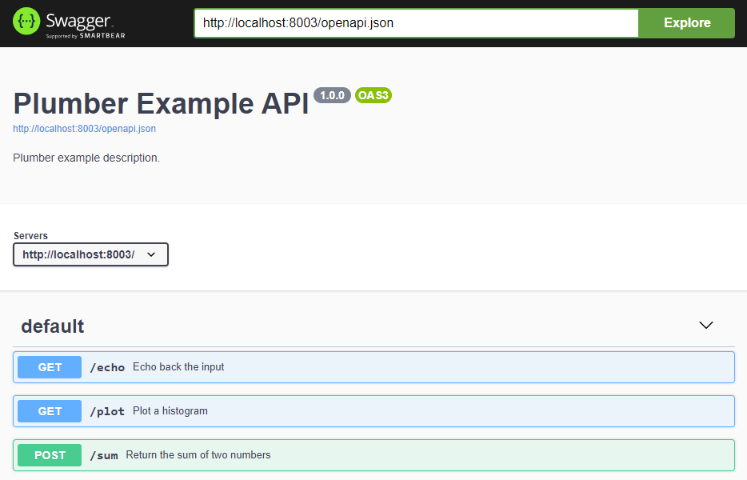

Overview
Sharing data science projects with stakeholders can be challenging, especially when working on smaller teams without dedicated IT/DevOps support. Through a lot of trial and error, I’ve developed a framework that I use for most of my R projects. This framework makes it easy to collaborate with other team members and deploy web apps, reports, and APIs on-premises or in the cloud. In this post I’ll outline the steps needed to get started (code here).
Install Docker
The first step is to install Docker. Docker is a platform that allows you to run applications in “isolated” environments called containers. You can find the install instructions here.
Dockerfile
Once Docker is installed, you’ll need to create a Dockerfile for your container. A Dockerfile is just a text file with instructions for what your environment needs to run code. These steps are usually comparable to helping a new team member get their laptop setup. Generally, you tell them what they need to install: programs, packages, database drivers, etc. A Dockerfile formalizes this process and makes it much easier to manage.
Luckily, the folks at The Rocker Project have already done most of the heavy lifting. They provide a collection of Linux container images that you can extend for your own project. I generally use the rstudio images which come with RStudio Server already installed. These images make it easy to develop R code inside the container while it’s running.
Below you’ll find an example of a typical Dockerfile I use. It extends the rstudio:4.2.2 image from The Rocker Project, installs and configures Shiny Server (more on that later) and installs the R packages I’ll need.
dockerfile
FROM rocker/rstudio:4.2.2
#install shiny server
RUN /rocker_scripts/install_shiny_server.sh
#add shiny server config
COPY /R/shiny_server.conf /etc/shiny-server/shiny-server.conf
#install R packages
RUN R -e 'install.packages(pkgs = c("markdown"))'
RUN R -e 'install.packages(pkgs = c("rmarkdown"))'
RUN R -e 'install.packages(pkgs = c("plumber"))'Docker Compose file
compose.yml
version: "3.9"
services:
blog_example:
build: .
image: blog_example
container_name: blog_example
environment:
- PASSWORD=blog
- ROOT=true
ports:
- "8803:8787"
- "8003:8000"
- "3983:3838"
restart: always
volumes:
- ./R:/home/rstudio/RBuild and run container
docker-compose -f compose.yml up --build -dAdd Shiny Server
docker-compose -f compose.yml up --build -d
docker-compose -f compose.yml down
docker exec -dw /home/rstudio/R/api blog_example Rscript run.RAdd Shiny web apps and R Markdown documents
Add APIs
http://localhost:8003/__docs__/#/
